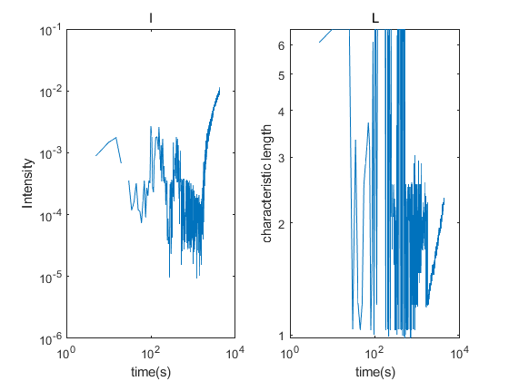

clc
clear
matrixT=[];n=[];
fname='a/bitmap';
bname='.jpg';
A=[fname,'00020',bname];
K = imread(A);
K = rgb2gray(K);
a=0;
iadd=0;
jadd=0;
for j=334:434
for i=238:338
if K(i,j)>200
iadd=iadd+i;
jadd=jadd+j;
a=a+1;
end
end
end
x=floor(iadd/a);
y=floor(jadd/a);
clear a i j jadd iadd;
for m=1:(length(dir('a'))-3)
weishu=floor(log10(m))+1;
weishu=5-weishu;
p=num2str(m);
for o=1:weishu
p=['0',p];
end
A=[fname,p,bname];
clear o p weishu;
K = imread(A);
K = rgb2gray(K);
F=K(((x-200):(x+200)),((y-200):(y+200)));
F=double(F);
Intensity=zeros((length(F)+1)/2,1);
a=Intensity;
for i=1:length(F)
for j=1:length(F)
n=ceil( ( (i-(length(F)+1)/2)^2+(j-(length(F)+1)/2)^2 )^0.5 );
if (n>0)&&(n<=(length(F)+1)/2)
Intensity(n)=Intensity(n)+F(i,j);
a(n)=a(n)+1;
end
end
end
Intensity=Intensity./a;
matrixT=[matrixT Intensity];
end
matrixT=matrixT/255;
pix=(1:(length(F)+1)/2)';
clear a A bname F fname i Intensity j K m n x y;
b=matrixT;
b=(abs(b-0.0833)).^1.5;
b=b-b(:,5);
shulie=pix';
xiuzhengxishu=cos(atan(shulie*0.07/17.5)).^3;
xiuzhengxishu=1./xiuzhengxishu;
xiuzhengxishu=xiuzhengxishu';
b=b.*xiuzhengxishu;
b=b((24:201),:);
[M,I] = max(b);
I=I+23;
time=1:size(matrixT,2);
time=5*time';
I=I';
M=M';
jiao=atan(I*0.07/17.5);
qm=4*3.1415926/632.8*1000*sin(jiao/2);
L=2*3.141526./qm;
figure
subplot(1,2,1);
loglog(time,M),title('I');xlabel('time(s)'); ylabel('Intensity');
subplot(1,2,2);
loglog(time,L),title('L');xlabel('time(s)'); ylabel('characteristic length');
